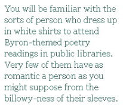

If George Gordon, Lord Byron, were alive today, he would have a lot to answer for. Apart from the incest and rape, which we can look upon indulgently as a valid means of personal expression, Byron was responsible for the introduction to popular consciousness of the big white shirt, and worse, the big white shirt school of poetry.
No doubt Lord Byron himself looked good in a big white shirt, but it’s a difficult style to get away with these days, and it’s a sad fact that most people who go in for romantic floppiness as a look are ill-equipped to carry the thing off convincingly. Still the temptation to dress in leather trousers and ruffles continues to prove too strong for many people. I think this may be especially true in the city of Nottingham, which claims Byron as its own and honours his memory by putting his name on the trams, along with those of other illustrious citizens — legendary Nottingham Forest manager Brian Clough, champion figure skaters Torvill and Dean and Erica Beardsmore, inspiration behind the Erica Beardsmore Trophy, presented to the Best Community Project winner for Nottingham in Bloom[1].
I have since my arrival here last October attended two Byron-related poetry events, very different in most respects but neither to my mind completely successful in summoning the spirit of their patron. The first took place in a public library and was entitled “Mad, Bad and Dangerous to Know” which I submit is just setting yourself up for a disappointment[2].The words “Mad, Bad and Dangerous to Know!” were hand-stencilled in magic marker and attached to a piece of that cloth-covered message board stuff that office cubicles are made from. And while the evening could never be described as good or sane, still the whole thing was about as unByronic as you can get.
You will be familiar with the sorts of person who dress up in white shirts to attend Byron-themed poetry readings in public libraries. Very few of them have as romantic a person as you might suppose from the billowy-ness of their sleeves. The exception on this occasion was an exceptionally pretty and sulky-looking girl who sipped her glass of wine with such a convincing display of sophisticated ennui as made me keen to look rather bored and superior myself. The rest of the readers and audience were quite old and when elderly schoolteachers recite bits of Don Juan with their shirts opened louchely at their curly grey chests, you may be sure that the effect is less stimulating sexually than might be desired.
The air of middle-aged naughtiness was sustained by enormously fat ladies with extremely thick glasses and corsets whose inefficacy at containing a menacing tsunami of bosom bordered, in my view, on the irresponsible[3]. The bosomy naughtiness brought out a sort of giggling girlishness in these ladies, one of whom, having read the 18-year-old Byron’s First Kiss of Love concluded with a breathless “Ooh, I say!”. Another read The Destruction of Sennacherib with such breathless ardour (”The Assywian came down wike a wowf on the fowd/ And his cohowts wewe gweaming in puwpwe and gowd!”) that I got the distinct impression that she fancied Lord Byron and wanted to kiss him. So maybe the spirit of the man was served after all.
The last reader was a tall and good-looking guy who had suitably flowing hair and who succeeded in making his flouncy poet-garment look less like a shroud than the men who had read before him. I was even prepared to reserve judgment on his leather trousers until he began to speak. I think this guy thought he actually was George Gordon, Lord Byron. He said something about dancing with the devil in the pale moonlight, which I think is a quotation from Tim Burton’s first Batman film, and what’s more he seemed to mean it. The best way to describe his reading, or performance, was that he made love to the audience the way that models are traditionally encouraged to make love to the camera. In any other setting this might have been creepy (and at least one of the middle-aged ladies gave a little gasp of delighted outrage at being violated in this way) but here in the fluorescent fug of the public library, it was satisfyingly silly enough for me to glance over at the sulky girl and attempt to share a smirk. As her scowl turned to a smile I felt like the kind of Byronic seducer that picks up girls in public libraries, until I realised that she was smiling at the reader, who had just finished by drinking some wine from a mug in the shape of a skull, and was her boyfriend. Fucking idiot. (Not me, him.) I grabbed a handful of nacho cheese flavoured Doritos and another glass of free wine, disgusted.
There was more long hair and leather trousers at the Byron Ball in the Comfort Hotel in December, this time being worn by a man whose manner was more convincingly Byronic. This is not really a compliment when you think about it, but then when Caroline Lamb described the poet as “mad, bad and dangerous to know” she probably didn’t mean it as a compliment either. Somehow, though “irritatingly rude” is unlikely to be the sort of slogan that will ring down the ages as an endorsement of rockstar swagger. Mind you a bit of swagger was what was needed at this event, because it was, when all is said and done, run by Goths.
Goths are not usually good poets, but they do at least share a certain Romantic-poetic sensibility, which is to say they feel important because of their pain. The whole goth aesthetic, moreover, includes a good deal more than the typical sullen teenage vampire look. There are cybergoths and industrial Goths and quite a range of subtly different darkly romantic styles which can all be fitted under the loose general heading of gothic. On sale in the foyer outside the stage area in the Comfort Hotel, for instance, alongside the gothic art — doomed semi-pre-Raphaelite pin-ups and Japanese-style cartoon vampire porn — were t-shirts of Marilyn Manson and Slipknot, erotic cakes and subscriptions to the restoration fund for Newstead Abbey, Byron’s ancestral home and, it turned out, the ostensible reason for the Byron Ball. Which ball, in all fairness to it, was really not a ball at all.
What it was was a sort of extended skit or revue, incorporating poetry, burlesque (there seems to be a small overlap between burlesque and psychobilly and 18th Century style romantic decadence, which I find hard to pin down but definitely has something to do with corsets) and pantomime (corsets again, but this time being worn by unconvincing and unenthusiastic drag queens).
My own part in the evening was to play “a poet”, which if you are Irish and living in England is quite easy to do. I wore a tweed hat and made a point of sounding pained and sonorous. My fellow poets were the Byronic man, who to his credit had the goth-poet lady running the show gushing and swooning unfeignedly. He did this by being really obnoxious and sort of sneering at proceedings. I found this unfair. It would have been really easy for me to sneer at proceedings too (keen readers will detect a slight smirk in the tone of this piece) but some of us had a little thing called manners that prevented us from openly scoffing at our fellow performers and the assembled company. Also some of us were shorter and less dashing, which is always a bit galling. I was relieved when this guy’s poetry turned out to be an awful mish-mash of unfunny pop-cultural references, but the girls in the audience liked it. I felt the way Shelley must have felt when Byron was off having his way with attractive servants.
I was introduced by a lady who called herself “The Slut”. She wore kinky heels and a dog collar and managed to pull off the goth-poet thing pretty successfully, even if her poetry was a little vagina-y for my tastes. She in turn had been introduced by a man calling himself “The Dark Poet”. The Dark Poet, who “has published over 120 poems on the internet” was recruited through his MySpace page, where, it must be admitted he cuts quite a dash.
In real life, The Dark Poet’s performance was not all that it could have been. Dark Poet’s sentiments — child abuse is deplorable and religious bigotry is something to be discouraged — are, in my view, beyond reproach, but these insights, profound as they are, were presented rather plainly and punctuated with the odd disturbingly high-pitched giggle which did little to add to his doomed Romantic dash.
After the show I shared some erotic cake with personable burlesque artiste[4] Emerald Ace. But that was all. As the English Heritage crowd left happy that they had done their bit for the Great Poet’s ancestral home, the DJs started up with the industrial metal. That shit is not really my cup of tea, so I left.
The poetry at the Byron Ball was definitely worse than at “Mad Bad and Dangerous to Know”. This may be because the poetry at M, B and D to K was actually written by George Gordon, the poet Lord Byron. And yet amidst all the silly vampire tableaux and the self-consciously classy decadence, there was something more satisfyingly corrupt about the Goths munching merrily on the surprisingly tasty erotic cake. Perhaps it’s because of what most of us perceive instinctively: that Byron is, and probably always has been, more notable as the ideal of a glamorised poetic than as the producer of actual literature, which as most of us also know is mainly wrung feebly from the abject neurosis of monstrous egotists who can hardly ever get away with wearing floppy shirts. And that in itself makes him a worthy candidate for lending his name to public transport.
[1] Unvarnished truth. Interested readers can find more information on the naming of the Nottingham trams here:
http://www.thetram.net/features/tram_names.asp[2] What’s wrong with having a poetry reading in a library? Well, nothing, I suppose, but the particular thing about Byron is that he is more remembered for being Byronic than for his poetry, at least here. And so an uncomfortable conjunction of unconvincing rakishness and a dry bookishness that seems a little too earnest and worthy to do justice to its subject seems to result.
[3] This conjunction of corsetry and corpulence may be the principal unifying factor for Byron-themed poetry nights in the city of Nottingham, q.v. below.
[4] I don’t really like the word “artiste” but what else can you call a burlesque performer?